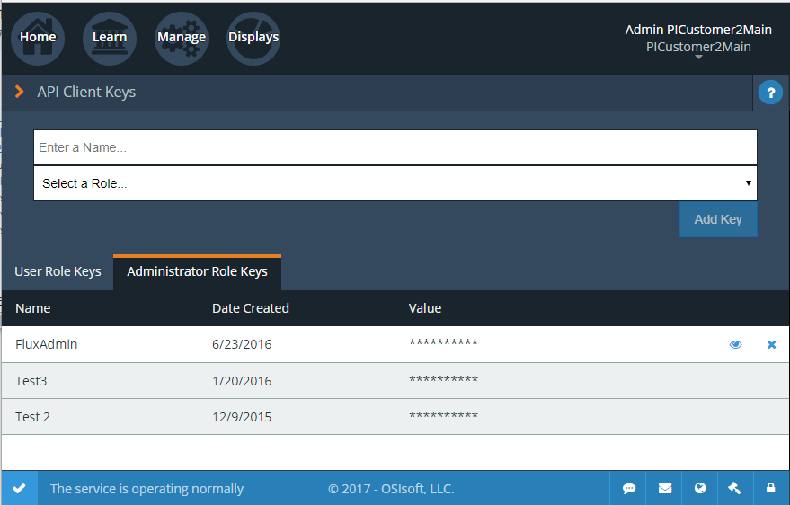
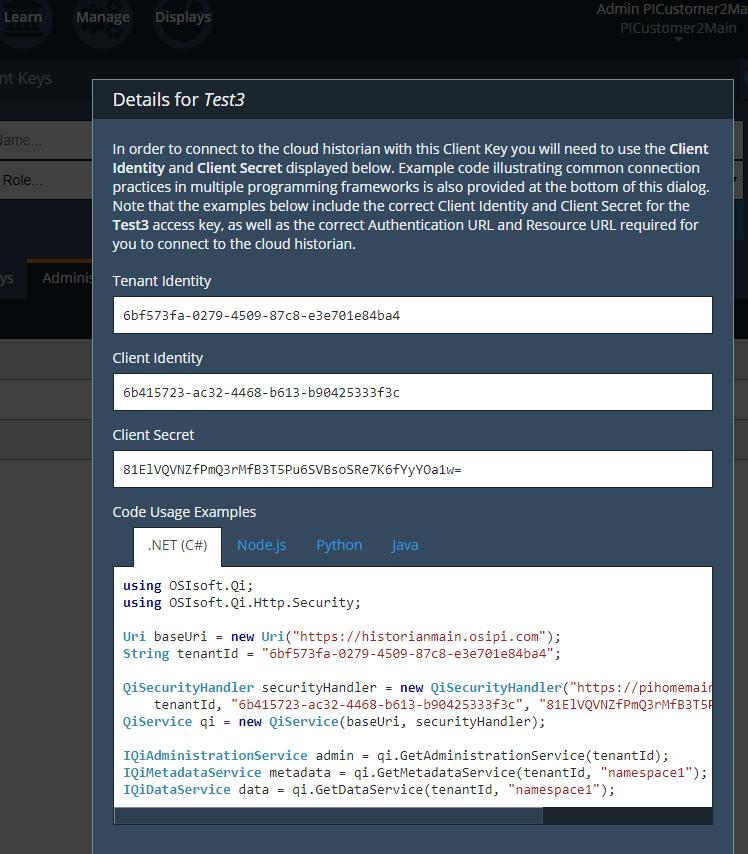

Quick start
.. contents:: Topics in this section: :depth: 3
SDS quick start
SDS is a sophisticated data store. The information in this section describes a very simple interaction with SDS. To follow along with the steps in this section, you will first need a Tenant and associated security credentials. If you have not already acquired a tenant, email SDS support at: OSIsoft Cloud Services.
The Preview is limited; contacting OSIsoft does not assure participation.
Throughout this guide, you will be instructed to interact with the Portal. To access the section identified, you must sign into the Portal using the credentials associated with the Tenant.
You will also need a Namespace and administrative client keys.
Step 1: Acquire a Namespace
Navigate to the OSIsoft Cloud Services page. Then, select the Manage tab and select Namespaces. For the steps in this section, you can use either an existing Namespace or you can create a new Namespace.
Step 2: Acquire client keys
For this example, the application acts as a confidential client – an application that is capable of securely maintaining a secret. In Azure Active Directory, the confidential client authentication flow is accomplished using an Application Identity. OSIsoft Cloud Services supports this authentication with a Client Key and a Secret.
To acquire the Client Key from the portal, select Client Keys under Manage, as shown in the following image:

You can either select an existing key or create a new key. Click the eye icon next to the desired key
to see configuration information. You will need the Tenant Identity, Client Identity, and Client Secret to proceed.
The Tenant Identity, Client Identity, and Client Secret are used to acquire a security Token from an identity
provider (Azure Active Directory).
Step 3: Acquire authentication token
You use the Tenant Identity, Client Identity, and Client Secret to acquire an access token from Azure Active Directory. Click on the eye icon next to the desired key to see the values and code samples for various languages.

Step 4: Create data types
An SdsType describes the structure of a single measured event or object. An SdsStream has an associated SdsType and stores a stream of events or objects that take the shape of that type.
An SdsType consists of one or more data properties, one of which must represent an index. Indexes can be simple, such as a single integer property, or compound, represented by multiple properties. DateTime is a common index for time-series stores.
SDS supports a wide variety of property types, including simple types like integers, strings and floats and complex types like lists, arrays and enumerations. Properties can be of any complex SdsType. For additional information, including a detailed list of supported data types, refer to Types.
To create an SdsType in .NET, use the .NET SDS libraries SdsTypeBuilder.
public enum State
{
Ok,
Warning,
Alarm
}
public class Simple
{
[SdsMember(IsKey = true, Order = 0)]
public DateTime Time { get; set; }
public State State { get; set; }
public Double Measurement { get; set; }
}
SdsType simpleType = SdsTypeBuilder.CreateSdsType<Simple>();
simpleType.Id = "Simple";
simpleType.Name = "Simple";
simpleType.Description = "Basic sample type";
await config.CreateTypeAsync(simpleType);
When working outside of .NET, SDS libraries are unavailable. The SdsType is defined using JSON and is posted to the OSIsoft Cloud Services endpoint.
POST /api/Tenants/{tenantId}/Namespaces/{namespaceId}/Types/{typeId} HTTP/1.1
Authorization: Bearer <bearer-token>
Content-Length: 1562
Content-Type: application/json
Host: dat-a.osisoft.com
{
"$id":"1",
"Id":"Simple",
"Name":"Simple",
"Description":"Basic sample type",
"SdsTypeCode":1,
"IsGenericType":false,
"IsReferenceType":false,
"GenericArguments":null,
"Properties":[
{
"Id":"Time",
"Name":"Time",
"Description":null,
"Order":0,
"IsKey":true,
"FixedSize":0,
"SdsType":{
"$id":"2",
"Id":"c48bfdf5-a271-384b-bf13-bd21d931c1bf",
"Name":"DateTime",
"Description":null,
"SdsTypeCode":16,
"IsGenericType":false,
"IsReferenceType":false,
"GenericArguments":null,
"Properties":null,
"BaseType":null,
"DerivedTypes":null
},
"Value":null
},
{
"Id":"State",
"Name":"State",
"Description":null,
"Order":0,
"IsKey":false,
"FixedSize":0,
"SdsType":{
"$id":"3",
"Id":"ba5d20e1-cd21-3ad0-99f3-c3a3b0146aa1",
"Name":"State",
"Description":null,
"SdsTypeCode":609,
"IsGenericType":false,
"IsReferenceType":false,
"GenericArguments":null,
"Properties":[
{
"Id":"Ok",
"Name":null,
"Description":null,
"Order":0,
"IsKey":false,
"FixedSize":0,
"SdsType":null,
"Value":0
},
{
"Id":"Warning",
"Name":null,
"Description":null,
"Order":0,
"IsKey":false,
"FixedSize":0,
"SdsType":null,
"Value":1
},
{
"Id":"Alarm",
"Name":null,
"Description":null,
"Order":0,
"IsKey":false,
"FixedSize":0,
"SdsType":null,
"Value":2
}
],
"BaseType":null,
"DerivedTypes":null
},
"Value":null
},
{
"Id":"Measurement",
"Name":"Measurement",
"Description":null,
"Order":0,
"IsKey":false,
"FixedSize":0,
"SdsType":{
"$id":"4",
"Id":"0f4f147f-4369-3388-8e4b-71e20c96f9ad",
"Name":"Double",
"Description":null,
"SdsTypeCode":14,
"IsGenericType":false,
"IsReferenceType":false,
"GenericArguments":null,
"Properties":null,
"BaseType":null,
"DerivedTypes":null
},
"Value":null
}
],
"BaseType":null,
"DerivedTypes":null
}
Step 5: Create a stream
An SdsStream has an associated SdsType and stores a stream of events or objects that take the shape of that type. Detailed information about streams can be found in SdsStreams.
Create an SdsStream of Simple events using the .NET SDS libraries as follows:
SdsStream simpleStream = new SdsStream()
{
Id = "Simple",
Name = "Simple",
TypeId = simpleType.Id
};
simpleStream = config.CreateStreamAsync(simpleStream);
To create the stream without the libraries, post a JSON representation of the SdsStream to OSIsoft Cloud Services.
POST /api/Tenants/{tenantId}/Namespaces/{namespaceId}/Streams/{streamId} HTTP/1.1
Authorization: Bearer <bearer-token>
Content-Length: 139
Content-Type: application/json
Host: dat-a.osisoft.com
{
"$id":"1",
"Id":"Simple",
"Name":"Simple",
"Description":null,
"TypeId":"Simple",
"BehaviorId":null,
"Indexes":null
}
Step 6: Write data
SDS supports many methods for adding and updating data. In this section, you will insert data.
Inserts fail if events with the same index already exist in the database. Update
adds new events and replaces existing events.
To insert an event using the .NET SDS libraries:
Simple value = new Simple()
{
Time = DateTime.UtcNow,
State = State.Ok,
Measurement = 123.45
};
await client.InsertValueAsync(simpleStream.Id, value);
To POST a JSON serialized event to the OSIsoft Cloud Services:
POST /api/Tenants/{tenantId}/Namespaces/{namespaceId}/Streams/{streamId}/Data/
InsertValue HTTP/1.1
Authorization: Bearer <bearer-token>
Content-Length: 57
Content-Type: application/json
Host: dat-a.osisoft.com
{
"Time":"2017-08-17T17:21:36.3494129Z",
"State":0,
"Measurement":123.45
}
Additional information about writing data can be found in Writing data.
Step 7: Read data
SDS includes many different read methods for retrieving data from streams. In this section, you will read the value that was recently written.
Reads typically require an index or indexes. The index in the example is the Time property of Simple.
Retrieving the distinct value just written requires index timestamp of that value.
Most read calls also require one or more indexes to determine which data to read.
The simplest way to supply an index is as a string. In .NET a DateTime index could be supplied as follows:
string index = DateTime.Parse("2017-08-17T17:21:36.3494129Z")
.ToUniversalTime().ToString("o");
To read a value at a distinct index, use the .NET SDS libraries:
value = await client.GetDistinctValueAsync<Simple>(simpleStream.Id, index);
To read using REST:
GET api/Tenants/{tenantId}/Namespaces/{namespaceId}/Streams/{streamId}/
Data/GetDistinctValue?index={index} HTTP/1.1
Authorization: Bearer <bearer-token>
Content-Length: 0
Content-Type:
Host: dat-a.osisoft.com
Additional information about reading data can be found in Reading data.
Handling transient service interruptions
All applications that communicate with remote systems must manage transient faults. Temporary service interruptions are a fact of life in real-world cloud applications.
If you access SDs using the SDS .NET libraries, transient fault handling is built in; the SDS client automatically retries error codes identified as transient.
If you access the SDS API directly from the OSIsoft Cloud Services endpoint, you should consider creating your own retry logic to automatically retry when encountering errors identified as transient.
For SDS, the only error you should retry is Http response code 503: service unavailable. An immediate first retry is recommended, followed by an exponential backoff.
SDS client error
If you access SDS using the .NET libraries, be aware that any non-success responses returned to the client are packaged in an SdsHttpClientException, which is an Exception with the following additional properties:
string ReasonPhrase
HttpStatusCode StatusCode
Dictionary<string, object> Errors
- The StatusCode provides the HttpStatusCode from the response.
- The ReasonPhrase might provide additional information regarding the cause of the exception. You should always evaluate the ReasonPhrase in addition to the StatusCode to determine the cause of the exception.
- The Errors collection may provide additional specific error information based on the response. For example, if an InsertValues call failed because it conflicted with an existing event in the stream, the index of the conflicting event will be included in this dictionary.
SDS Timeout Request Header
Handling timeout issues can be difficult and confusing in a distributed programming environment. Often, when a client times out, the request is terminated before a response is received from the server, resulting in the application being unaware of the state of the server.
One solution is to use the Request-Timeout header, which is recognized by many OSIsoft Cloud Services. Using the header, you can tell the server how long to spend on a particular request before timing out. If possible, the server terminates the request if the time it takes to process the request exceeds the timeout value set in the header.
To specify the request timeout value, include the Request-Timeout header and specify the value in seconds.